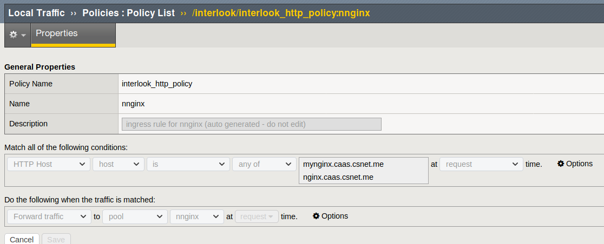
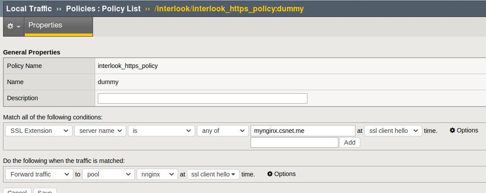

F5 BigIP
interlook can configure the f5 BigIP system for routing the traffic to the containerized application.
Update mode
Config updateMode drives how interlook will update the F5 BigIP.
Two modes are currently supported:
-
vs: for each service,interlookwill create/maintain a pool member and its associated pool. The pool members will be the docker host(s) actually running the service's containers. -
policy: you have to specify a "global" policy that will contain the rules allowing proper traffic routing. Two policies can be specified, one for HTTP services (globalHTTPPolicy) and one for HTTPS services (globalSSLPolicy).
Example of HTTP rule: 
Example of HTTPS rule: 
Configuration
f5ltm:
httpEndpoint: https://10.32.20.100
username: api
password: restaccess
authProvider: tmos
authToken:
httpPort: 80
httpsPort: 443
monitorName: tcp
tcpProfile:
partition: interlook
loadBalancingMode: least-connections-member
updateMode: policy
globalHTTPPolicy: interlook_http_policy
globalSSLPolicy: interlook_https_policy
objectDescriptionSuffix: ""